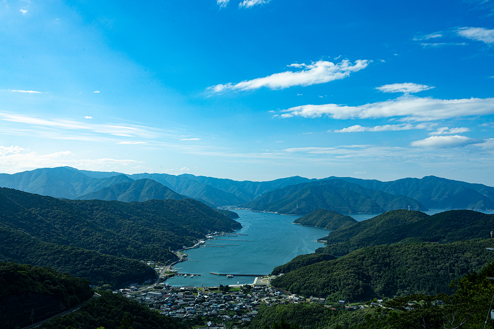
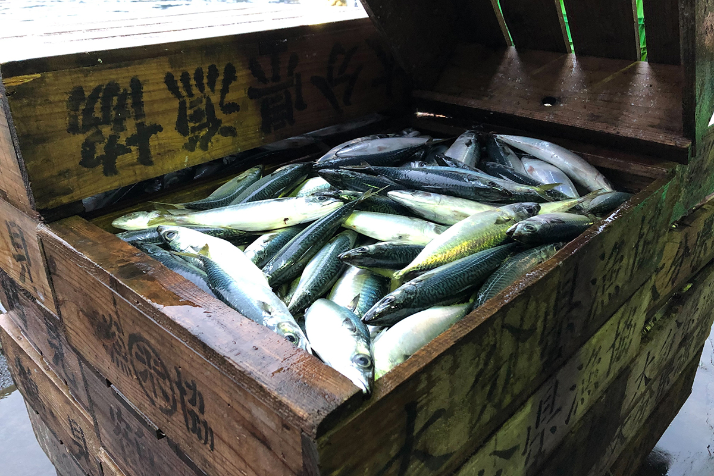
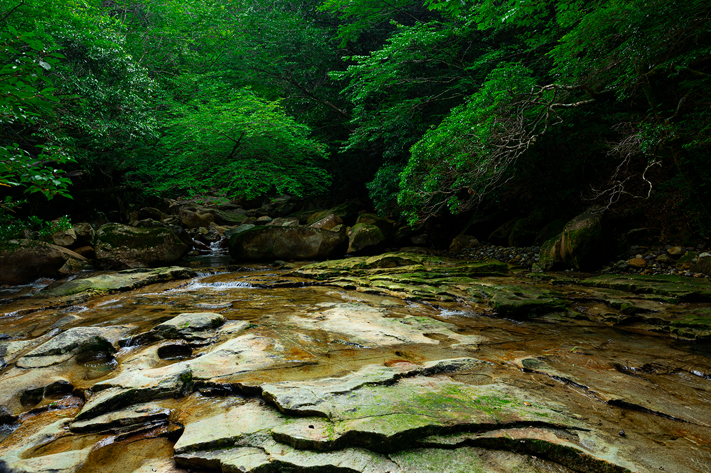
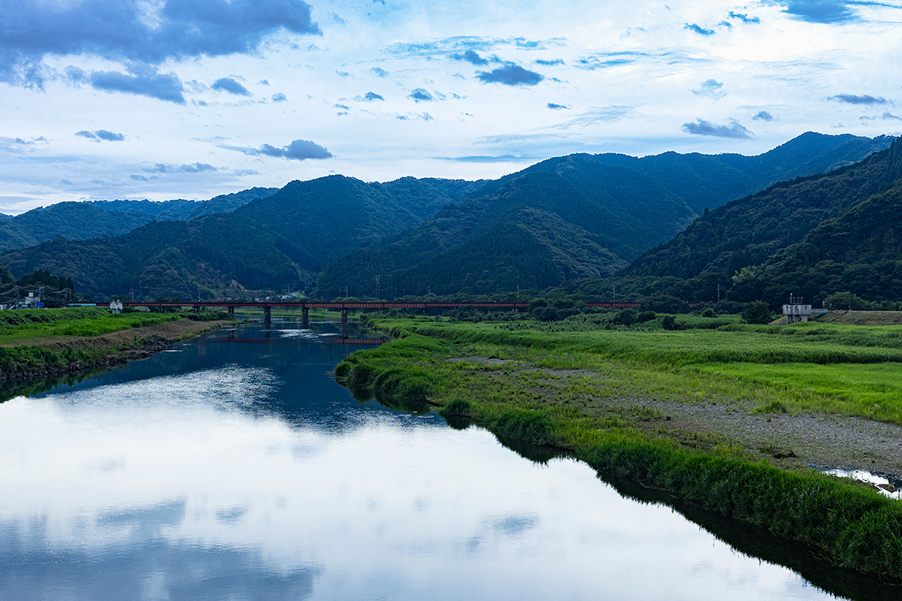
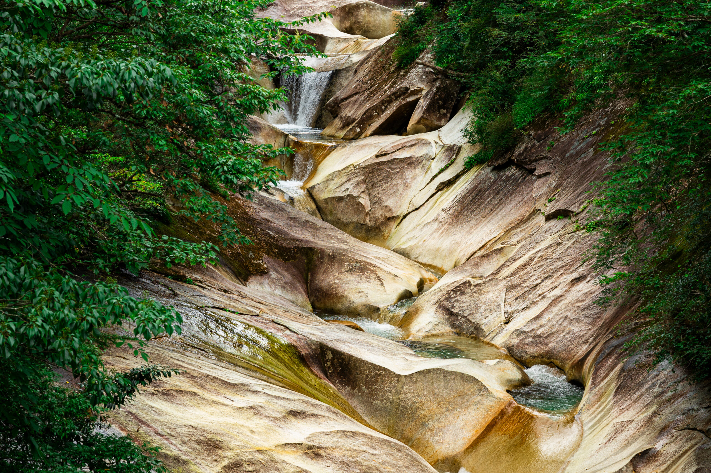
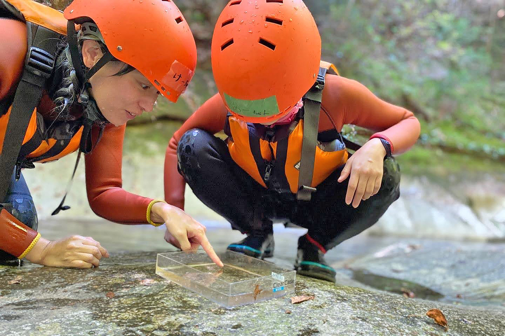
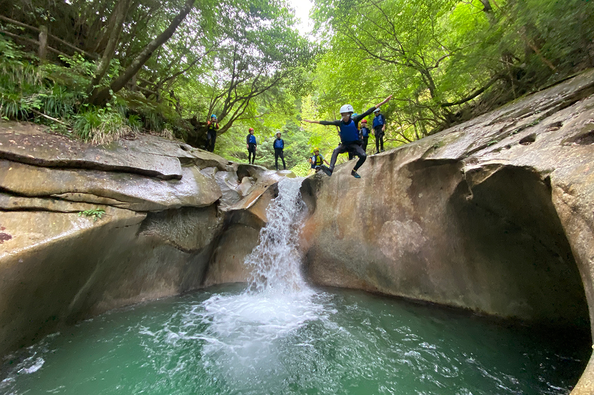
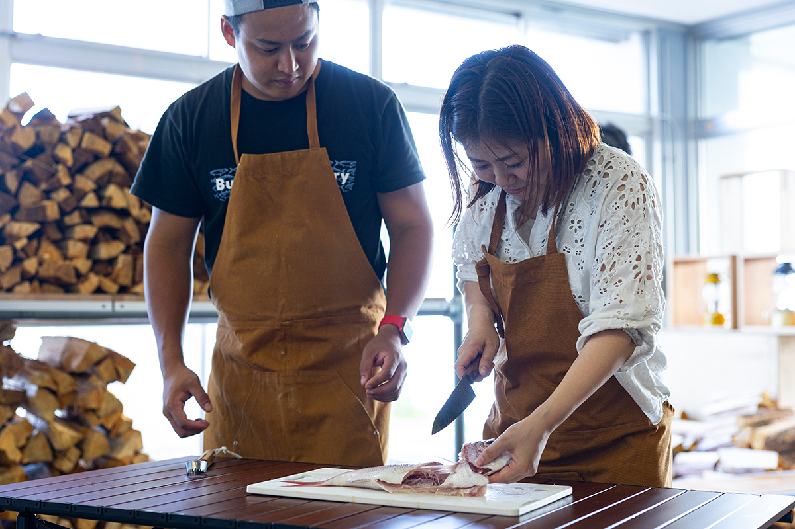
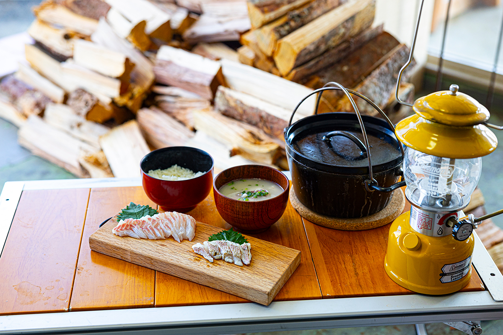
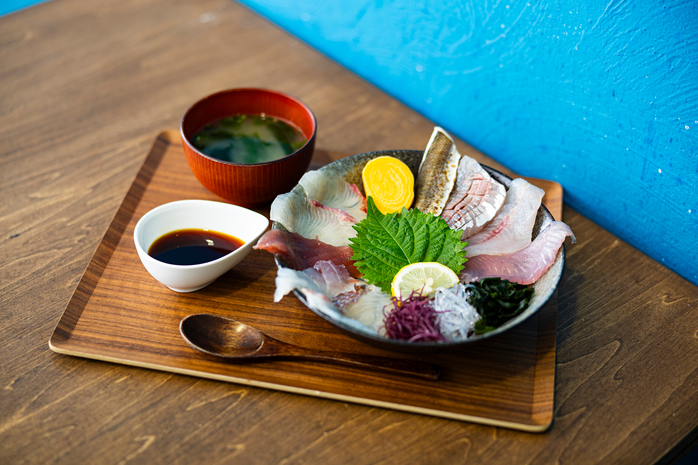

Префектура Оита · Саики · природа и рыба
Саики: бухты «ура», ущелье Фудзигавати и рыба, которую разделываешь сам

Саики, самая восточная точка острова Кюсю, считается главным рыбацким городом префектуры Оита. Но местные уверены, что богатство их бухт рождается в горах, и предлагают проверить это самому: пройти ущелье по руслу реки и разделать свежую рыбу над морем.
Город
Край, где правят бухты
Саики лежит на юго-востоке префектуры Оита и по площади это самый большой город Кюсю. Почти всю его территорию занимают леса, реки и море, поэтому сельское хозяйство, лес и рыболовство кормили здешних жителей испокон веков. Главное из этих занятий, конечно, рыба. Течения у побережья сильные, воды пролива Бунго богаты питательными веществами, и в сети попадает всё: ставрида, скумбрия, морской лещ, сардина. За год здесь выгружают больше 350 видов рыбы, и по улову Саики входит в число лидеров Японии.

Не меньше значат и рыбные фермы. Желтохвоста, камбалу и устриц в Саики выращивают столько, что на город приходится около 70% всей аквакультуры префектуры, и в Японии он известен как одно из главных хозяйств такого рода.
Секрет в особом рельефе побережья. Береговую линию здесь называют «ура»: это бухты и заливы, которые глубоко врезаются в сушу. Рыболовство в них ведут около 400 лет, с эпохи Эдо, когда Саики был призамковым городом одноимённого княжества. С тех времён дошла поговорка «Князь Саики держится на своих бухтах»: уловы были так богаты, что на них стояла вся казна княжества.

Основатель княжества Такамаса Мори, чтобы сберечь море, издал указ, ограничивший вырубку леса. Сегодня это назвали бы заботой об устойчивом развитии. Он понимал, что горы накапливают питательные вещества, реки несут их в море, а море кормит рыбу, и что этот круговорот надо беречь целиком.
Река
Бансё и «синева Хондзё»
В 2005 году Саики объединился с пятью соседними посёлками и тремя деревнями, и площадь города выросла примерно до 903 квадратных километров. Большую часть этих земель занимают горы, отроги хребта Кюсю.
Вдоль жилых кварталов течёт река Бансё, на которой держится весь природный круговорот. Лес отдаёт ей питательные вещества, она несёт их в море, и благодаря этому у побережья до сих пор собирается множество морских обитателей.

Тот же круговорот воды виден и в самих горах. На юге города, на границе с префектурой Миядзаки, лежит квазинациональный парк Собо-Катамуки, а в нём ущелье Фудзигавати. Тропа идёт через девственный лес, вдоль прозрачного потока и огромных гранитных глыб, которые вода шлифовала тысячелетиями.
В последние годы уловы в Саики сокращаются. Чтобы сберечь море, в городе переиначили старую поговорку: «Дары бухт держатся на горах». Значит, нужно беречь лес и реки и понимать, как устроен этот круговорот. Ниже два способа почувствовать его на себе.
Каньонинг
Ущелье Фудзигавати с Tent Tent Tours
В 2023 году туристическая ассоциация и мэрия Саики начали вместе создавать программы, на которых можно в игровой форме узнать, что дают человеку лес, река и море. Одну из них проводит местная компания Tent Tent Tours. Её основатель родом из Саики: он занимался обучением на природе в Осаке, а потом вернулся домой, чтобы показывать приезжим родные места.

Летом компания водит группы на каньонинг в ущелье, в январе и феврале устраивает треккинг к замёрзшим водопадам, в мае и июне показывает светлячков в верховьях Бансё, а круглый год проводит ночные прогулки, на которых высматривают летяг.
Маршрут по ущелью Фудзигавати подходит и небольшим группам. Вокруг густой лес и множество живности, и для детей такая встреча с природой становится настоящим открытием. По пути на протяжении примерно 8 км тянутся огромные валуны, а среди самых красивых мест «Изумрудный омут». Не менее популярны и прогулки за летягами на горе Сирояма.


В 2023 году тур стоил от 8000 иен для взрослых и от 4000 иен для детей младшего школьного возраста и младше.
Tent Tent Tours: каньонинг в ущелье Фудзигавати
- Даты
- ежегодно с начала июня до конца сентября
- Часы работы
- 9:30–13:30 (около 4–5 часов)
- Цены / Вход
- от 8000 иен с человека, дети младшего школьного возраста и младше от 4000 иен; снаряжение напрокат; группа до 10 человек
Рыба
Кемпинг Такахира: разделать улов над бухтами
Вторая программа связана с рыбой. Её придумал выходец из префектуры Канагава, который переехал в Саики и в 23 года стал начальником придорожной станции «Камаэ». В Японии всё меньше едят рыбу, и он хотел дать людям возможность взять её в руки.
Проходит она в кемпинге Такахира, на самом юге префектуры Оита. Площадка стоит на высоте 300 метров, и с неё открывается вид на бухты «ура». Свежая рыба с такой панорамой уже праздник, а если разделать её самому, то, как надеется автор идеи, и интерес к рыбе станет глубже.

В 2023 году занятие стоило от 4500 до 7700 иен и проходило один на один с наставником, так что справлялись даже новички. Рыбу сначала обездвиживали по всем правилам, повреждая нервный канал, затем разделывали, а потом ели как сасими и в рисе, сваренном с рыбой. В день принимали не больше четырёх человек, записываться нужно было онлайн и заранее.

Кемпинг Такахира
- Адрес
- префектура Оита, Саики, Камаэ, Такэноура, Кавути, 2156-171
- Телефон
- +81 50-5527-1821
- Часы работы
- здание кемпинга 10:00–16:00
- Выходные
- среда
- Цены / Вход
- место под свою палатку 2000–4500 иен, домик 10 000–17 500 иен (3 домика); разделка рыбы 4500–7700 иен, по записи (данные 2023 года, проводится ли сейчас, уточняйте)
- Сайт
- nap-camp.com
Обед
Придорожная станция «Камаэ»
На самой станции «Камаэ» работают ресторан «Уминари-тэй» и магазин, где продают свежую рыбу и продукты местных хозяйств.

Придорожная станция «Камаэ»
- Адрес
- префектура Оита, Саики, Камаэ, Камаэура, 5104-1
- Телефон
- +81 972-42-0050
- Часы работы
- ресторан 11:00–15:00, магазин свежих продуктов 9:00–18:00
- Выходные
- новогодние праздники
- Сайт
- buri.fish
В дорогу
Велосипед и сто лет вперёд
Путешествуя по Саики, загляните на велостанцию у станции JR Саики. Здесь можно передохнуть в дороге, а на велосипеде проще добраться до мест, куда пешком не дойдёшь.
В городе собирались и дальше расширять число таких программ, где о природном круговороте рассказывают местные хозяева, знающие здешние горы и воды лучше всех. Если, побывав на них, человек снова почувствует, как ценна природа, то и через сто лет у Саики останутся богатые бухты.
Все эти программы объединил туристический проект «Ура 100», запущенный в 2023 году: город и местные предприниматели продвигают туры, посвящённые природному круговороту. Тогда в нём участвовали три компании, а у проекта появился логотип по мотивам рыбацкого флага большого улова, «тайрёбата», в современной версии.
Туристический информационный центр Саики
- Телефон
- +81 972-23-3400
- Сайт
- visit-saiki.jp
Фото: Хиромаса Оцука.